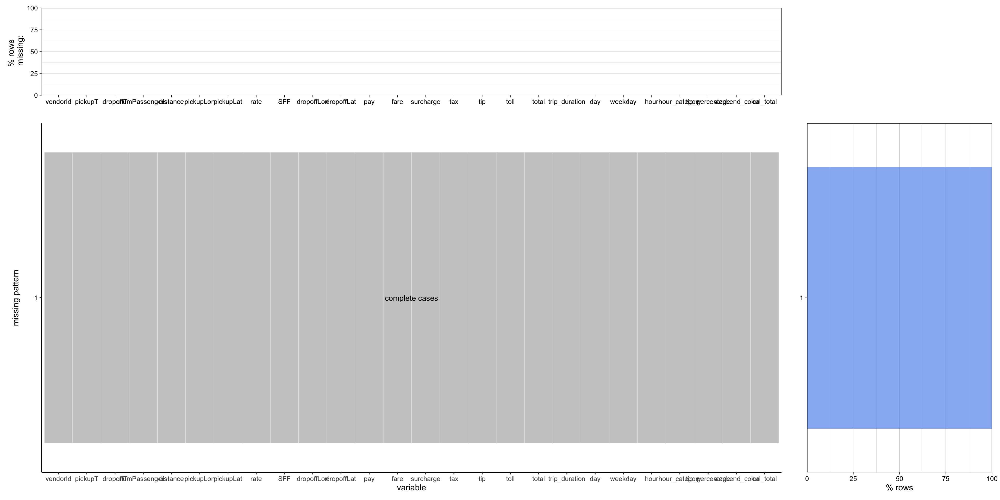
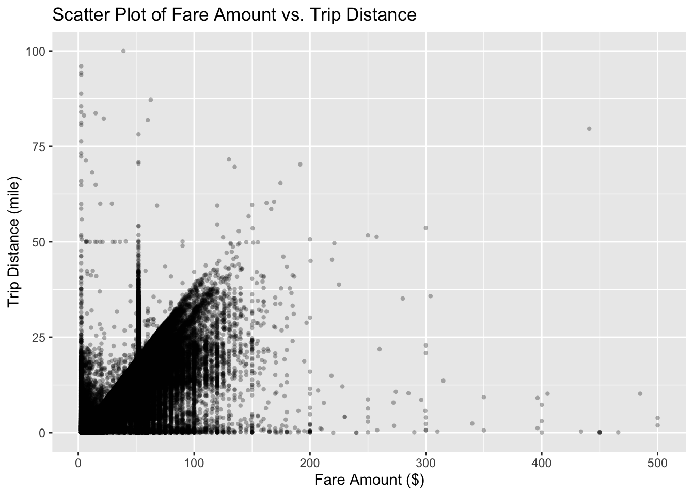

Code
taxi$trip_duration <- as.numeric(difftime(taxi$dropoff_datetime,
taxi$pickup_datetime, units="mins"))The original dataset, which describes all yellow taxi trips completed in 2014 in NYC, was downloaded on the NYC OpenData website (link to dataset). The data was collected and provided to the NYC Taxi and Limousine Commission (TLC) by technology providers authorized under the Taxicab Passenger Enhancement Program (TPEP). Thus, the trip data was not created by the TLC, and as explained on the agency website (TLC website), the TLC company cannot confirm the accuracy or completeness of these data. As a result, the data may differ from the total number of trips dispatched by all TLC-licensed bases in 2014.
The data was created on 06/03/2015, the data was last updated on 02/10/2016, and the metadata was last updated on 05/09/2022. The data is valuable for historical purposes, so its update frequency is set to Historical Data. The downloaded dataset is a .csv file containing 165 million rows and 19 columns. Each row corresponds to a yellow taxi trip completed in 2014 in NYC and is described by 19 attributes, including the vendor type, the pickup/dropoff time and geographic coordinates, the number of passengers, the trip distance, the fare amount, the tip amount, and others.
Given the substantial size of the dataset and our initial motivations, we chose to select a reduced sample of the data. From the NYC OpenData website, we only exported the taxi trips of November 2014, as we are interested in how special events like Thanksgiving and the NYC Marathon impact the trends. Moreover, the payment_type attribute that indicates how the passenger paid for the trip has six different levels: (1) Credit card, (2) cash, (3) no charge, (4) dispute, (5) unknown, and (6) voided trip. The data reveals that the first and second categories (credit card and cash) represent 92% of all taxi trips. Therefore, we chose to focus our analysis on observations with the payment type of credit card and cash. The resulting dataset has around 12 million observations.
We decided to create new variables to address our objectives.
Creating trip_duration (in minutes)
taxi$trip_duration <- as.numeric(difftime(taxi$dropoff_datetime,
taxi$pickup_datetime, units="mins"))Creating day, weekday, and hour (based on pick-up time)
# day: 1, 2, ..., 30
# weekday: Monday, Tuesday, ..., Sunday
# hour: 0, ..., 23
taxi$day <- day(taxi$pickup_datetime)
taxi$weekday <- weekdays(taxi$pickup_datetime)
taxi$hour <- hour(taxi$pickup_datetime)Creating hour_category: Period of the Day (categorical variable)
| Category | Hour |
|---|---|
| Early Morning | 04:00 AM - 06:59 AM |
| Morning | 07:00 AM - 10:59 AM |
| Noon | 11:00 AM - 01:59 PM |
| Afternoon | 02:00 PM - 05:59 PM |
| Evening | 06:00 PM - 10:59 PM |
| Midnight | 11:00 PM - 03:59 AM |
taxi <- taxi |>
mutate(hour_category = case_when(
between(hour,4,6) ~ 'early morning',
between(hour,7,10) ~'morning',
between(hour,11,13) ~'noon',
between(hour,14,17) ~'afternoon',
between(hour,18,22) ~'evening',
TRUE ~ 'midnight'))Creating tip_percentage: Tip Percentage
taxi$tip_percentage <- taxi$tip_amount / taxi$total_amountCreating weekend_color: Type of Day (weekday vs. weekend)
# Identify Sundays and Saturdays
taxi$weekend_color <- ifelse(taxi$weekday %in% c("Saturday", "Sunday"),
"Weekend", "Weekday")After some preliminary analysis, we noticed some issues with the data.
Incorrect Pick-up/Drop-off Times
We identified trips with incoherent pickup and dropoff datetimes, where either the two datetimes are the same or the pickup datetime is later than the dropoff datetime. Subsequently, we removed those rows.
cat("Removed:", nrow(taxi[taxi$pickup_datetime >= taxi$dropoff_datetime]))Removed: 45474taxi <- filter(taxi, pickup_datetime <= dropoff_datetime)Incorrect NYC Border’s Longitudes/Latitudes
Observations with incorrect geographic locations, falling outside the specified longitudes and latitudes of the NYC border, were removed.
# Used the NYC border's longitudes and latitudes
# Latitude 40.92 <= x <= 40.92
# Longitude -74.27 <= y <= -73.68
cat("Removed:", nrow(taxi[taxi$pickup_latitude > 40.92 |
taxi$pickup_latitude < 40.49 |
taxi$dropoff_latitude > 40.92 |
taxi$dropoff_latitude < 40.49 |
taxi$pickup_longitude > -73.68 |
taxi$pickup_longitude < -74.27 |
taxi$dropoff_longitude > -73.68 |
taxi$dropoff_longitude < -74.27]))Removed: 254964taxi <- filter(taxi, pickup_latitude <= 40.92 &
pickup_latitude >= 40.49 &
dropoff_latitude <= 40.92 &
dropoff_latitude >= 40.49 &
pickup_longitude <= -73.68 &
pickup_longitude >= -74.27 &
dropoff_longitude <= -73.68 &
dropoff_longitude >= -74.27)Zero-distance Rides (drop-off location could not be tracked, the trip was cancelled, etc.)
We noticed that there are some zero-distance rides. For our analysis, we decided to remove those rows.
cat("Removed:", nrow(taxi[taxi$trip_distance == 0]))Removed: 39426taxi <- filter(taxi, trip_distance != 0)Rides with 0 Passenger
We observed trips involving 0 passengers and chose to remove those rows as well.
cat("Removed:", nrow(taxi[taxi$passenger_count == 0]))Removed: 1302taxi <- filter(taxi, passenger_count != 0)Rides with Abnormal Total Amounts
We removed observations where the total_amount is not equal to the sum of fare_amount, surcharge, mta_tax, tip_amount, and tolls_amount.
## R Issue with dplyr::filter: It cannot recognized all doubles.
# https://github.com/tidyverse/dplyr/issues/3031
# https://cran.r-project.org/doc/FAQ/R-FAQ.html#Why-doesn_0027t-R-think-these-numbers-are-equal_003f
# Look at 7.31 freq question
## Solution: Convert numeric to character
## (then convert back to numeric after comparing and filtering)
taxi_removed <- taxi |>
mutate(cal_total = fare_amount + surcharge + mta_tax +
tip_amount + tolls_amount) |>
mutate(cal_total = as.character(cal_total)) |>
mutate(total_amount = as.character(total_amount)) |>
filter(cal_total != total_amount)
cat("Removed:", nrow(taxi_removed))Removed: 868taxi <- taxi |>
mutate(cal_total = fare_amount + surcharge + mta_tax +
tip_amount + tolls_amount) |>
mutate(cal_total = as.character(cal_total)) |>
mutate(total_amount = as.character(total_amount)) |>
filter(cal_total == total_amount) |>
mutate(cal_total = as.numeric(cal_total)) |>
mutate(total_amount = as.numeric(total_amount))Rides with Abnormal Trip Duration
We removed trips with durations exceeding 1440 minutes (24 hours).
cat("Removed:", nrow(taxi |>
select(trip_duration) |>
filter(trip_duration > 1440)))Removed: 19taxi <- taxi |>
filter(trip_duration < 1440)The 19 attributes contained in the dataset with new variables will help us answer the research questions from the introduction. New variables include:
trip duration in minutes (using pickup datatime and dropoff datetime columns)
month, weekdays, hour of the day (using pickup datatime column)
period of the day (using pickup datetime column)
fare amount per mile in dollars/mile (using fare amount and trip distance columns)
We have at our disposal all the taxi trips in 2014 as well as the pickup times in datetime format. Using lubridate package, we are able to retrieve the month, day of the month, weekday, and hour of the pickup/dropoff datetimes. Those new columns are helpful to visualize the trends throughout different time scales. In particular, we may visualize the trend in the number of trips by day in November and identify whether weekends, holidays, or special events like the NYC Marathon may impact the number of trips.
Given the geographic coordinates (longitude and latitude) of pickup and dropoff locations, we are able to map the taxi trips. In particular, we may visualize the most and least busy pickup/dropoff locations on a NYC map. The datetime will also allow us to visualize how holidays and special events may impact the pickup/dropoff location distribution in the city. It would be interesting to visualize the business working hours by mapping the number of pickups/dropoffs between different periods of the day for a given location like the Financial District or World Trade Center Area.
Using the fare_amount attribute, we can visualize the overall trends of the taxi fares across the different periods of the day and days of the week. Comparing the results for holidays and the results for usual days, we can determine whether the fares increase or decrease. It would be interesting to combine this attribute with the trip distance or the trip duration to identify whether there is a correlation between these variables.
Similarly, with the tip_amount column, we can study the tipping trend across different periods of the day and different days of the week. We can check if special events in the month affect the tipping behavior of passengers. Finally, we can compare the average tips for different pickup/dropoff locations using the longitude and latitude variables.
NYC Yellow Taxi Trip 2014 data do not have NA values (missing values).
Check for total missing values
cat("Count of total missing values: ", sum(is.na(taxi))) Count of total missing values: 0Check for missing values by columns
colSums(is.na(taxi)) |>
sort(decreasing = TRUE) vendor_id pickup_datetime dropoff_datetime passenger_count
0 0 0 0
trip_distance pickup_longitude pickup_latitude rate_code
0 0 0 0
store_and_fwd_flag dropoff_longitude dropoff_latitude payment_type
0 0 0 0
fare_amount surcharge mta_tax tip_amount
0 0 0 0
tolls_amount total_amount trip_duration day
0 0 0 0
weekday hour hour_category tip_percentage
0 0 0 0
weekend_color cal_total
0 0 Plot: Patterns in Missing Values
taxi <- taxi |>
rename("vendorId" = "vendor_id",
"pickupT" = "pickup_datetime",
"dropoffT" = "dropoff_datetime",
"numPassengers" = "passenger_count",
"distance" = "trip_distance",
"pickupLon" = "pickup_longitude",
"pickupLat" = "pickup_latitude",
"rate" = "rate_code",
"SFF" = "store_and_fwd_flag",
"dropoffLon" = "dropoff_longitude",
"dropoffLat" = "dropoff_latitude",
"pay" = "payment_type",
"fare" = "fare_amount",
"surcharge" = "surcharge",
"tax" = "mta_tax",
"tip" = "tip_amount",
"toll" = "tolls_amount",
"total" = "total_amount")
plot_missing(taxi, percent = TRUE)
Nevertheless, corresponding to the scatter plot below, which illustrates the relationship between the fare amount and the trip distance, it appears that all NA values in the data have already been replaced with 0s.
taxi |>
ggplot(aes(x=fare, y=distance)) +
geom_point(alpha = 0.3, stroke = 0) +
labs(title = 'Scatter Plot of Fare Amount vs. Trip Distance',
x = "Fare Amount ($)",
y = "Trip Distance (mile)")